Model-Tab: Überblick - Ansichten, Explorer und Feld
Der Model-Tab im Überblick: sechs Bereiche für ein Modell - Ansehen und Prüfen, Modellieren, UVs, Gewichte, Texturen malen und Animation - mit denselben Ansichten, demselben Szenen-Explorer, dem Feld rechts und der Zeitleiste in jedem Bereich. Das Modell wird gezeichnet, wie das Spiel es zeichnet; Maus, Tasten und Aufbau folgen 3ds Max oder Blender, je nach deiner Wahl.
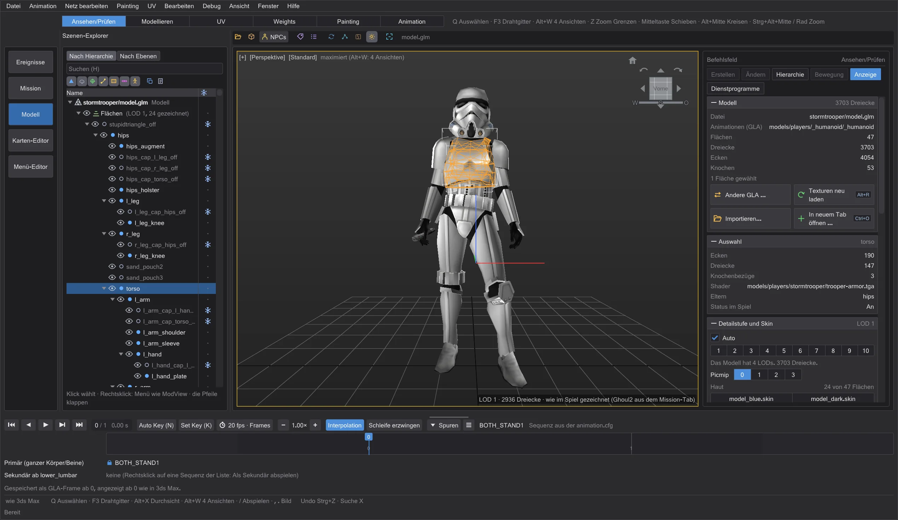
Ein Modell öffnest du wie bisher (NPCs, .glm, .pk3). Der Tab beginnt in Ansehen/Prüfen (Model-Tab: Ansehen und Prüfen); die Reihe der Bereiche über den Ansichten wechselt nach Modellieren (Model-Tab: Modellieren und Requisiten für die Karte), UV (Model-Tab: UV erstellen), Weights (Model-Tab: Weights), Painting (Model-Tab: Texturen bemalen) und Animation (Model-Tab: das Feld im Bereich Animation). Ansichten, Szenen-Explorer und Zeitleiste (Model-Tab: die Zeitleiste) sind in jedem Bereich dieselben, und die Pose läuft weiter, während du arbeitest. Das Modell kommt mit allen Detailstufen in ein eigenes Dokument; ein unverändertes Modell ergibt genau dasselbe Bild wie vorher (geprüft mit jedem Modell unter models/players von Jedi Academy, Jedi Outcast und Movie Duels).
Mehrere Modelle in Reitern#
Über der Ansicht hat jedes geöffnete Modell einen Reiter, benannt wie kyle/model.glm (Ordner und Datei); die Zeile erscheint, sobald ein zweites Modell offen ist oder Flächen in der Ablage liegen - mit einem Modell sieht der Tab aus wie bisher. Ein Klick auf einen Reiter wechselt zu diesem Modell; jeder Reiter behält alles von seinem Modell: Datei, GLA und Animation mit dem aktuellen Bild, Auswahl, Rückgängig-Verlauf, Modifier-Stapel und Begleitdatei, Rig und Control Rig, Bemalung, Zeitleiste, Kamera und Ansichten. +, Strg+O und In neuem Tab öffnen in der Gruppe Modell öffnen ein weiteres Modell in einem neuen Reiter - eine Modelldatei oder eines aus den Spieldateien. Ein schon offenes Modell öffnet nicht doppelt: sein Reiter wird aktiv. Importieren ersetzt wie bisher das Modell des aktiven Reiters. Das x eines Reiters schließt ihn; bei ungespeicherten Änderungen kommt zuerst die Frage, und beim Beenden fragt jedes Modell mit ungespeicherten Änderungen. Der letzte Reiter verschwindet nicht, er wird leer. Rechtsklick auf einen Reiter: Reiter schließen, Andere Reiter schließen.
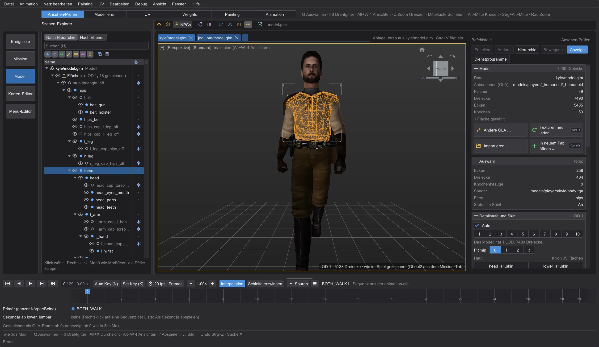
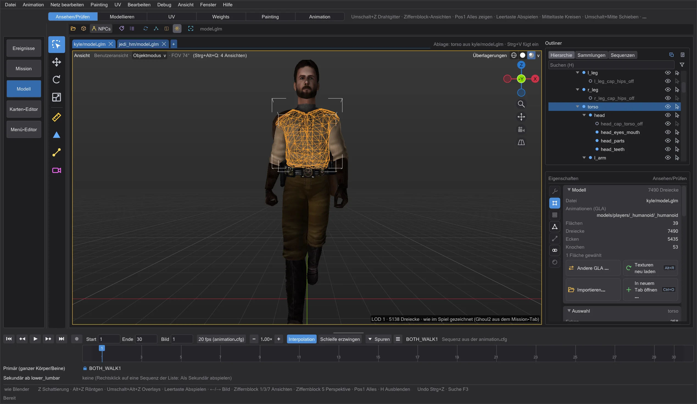
Flächen von einem Modell in ein anderes kopieren: Rechtsklick auf eine Fläche im Szenen-Explorer und Kopieren (Strg+C kopiert die gewählten Flächen). Die Reiterzeile zeigt rechts, was in der Ablage liegt. Im selben oder einem anderen Modell fügt Einfügen als Kind hiervon im Rechtsklick-Menü einer Fläche (Strg+V: unter der gewählten Fläche) sie als ihre Kinder ein, als ein Rückgängig-Schritt dieses Modells. Gewichte gehen an die gleichnamigen Knochen; ein Knochen, den das Modell nicht hat, gibt sein Gewicht an den nächsten vorhandenen Elternknochen - die Meldung nennt jeden, nichts geht still verloren. Alle Detailstufen kommen mit (mehr als das Modell hat fallen weg, fehlende werden mit der gröbsten gefüllt), ebenso der Shader, den die Quelle zeigt, und der Modifier-Stapel; ein Name, den es schon gibt, bekommt _1, _2. Die Grenzen des Spiels (Ecken je Fläche, 32 Knochen je Fläche, 4 Gewichte je Ecke) werden geprüft und in der Meldung genannt. In ein .md3-Requisit kommen die Flächen starr. Im Bereich Animation kopieren und fügen Strg+C und Strg+V die Pose ein, wie in Blender.
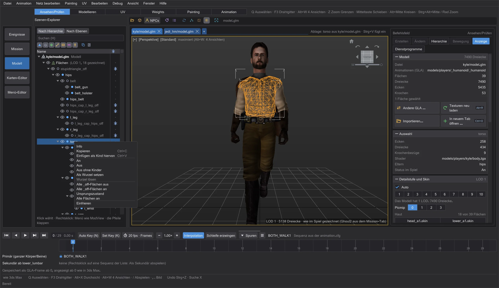
Szenen-Explorer#
Der Szenen-Explorer zeigt die Flächen (Nach Hierarchie oder Nach Ebenen), die Tags und die Knochen des Skeletts; Suchen (H) filtert nach Namen. Graue Flächen werden nicht gezeichnet. Ein Rechtsklick wirkt wie in ModView und wie im Spiel (G2_SetSurfaceOnOff, G2_SetRootSurface): Aus blendet die Fläche aus, ihre Kinder bleiben, Aus ohne Kinder blendet den ganzen Zweig aus, Als Wurzel setzen zeichnet nur diesen Zweig, Ursprungszustand nimmt alles zurück. Eine Skin-Zeile name,*off schaltet eine Fläche genauso ab. Knochen mit orangem Punkt sucht der Spielcode.
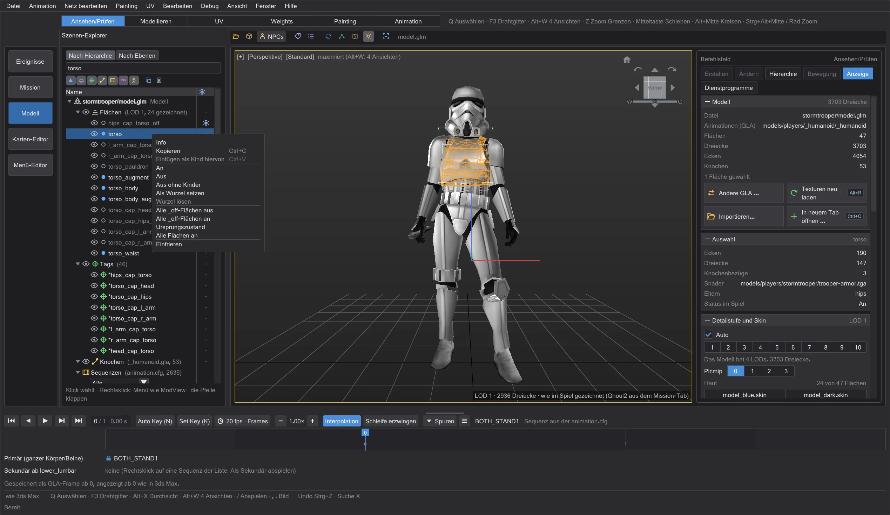
Rechtsklick auf einen Tag (etwa *r_hand) oder einen Knochen und Modell anbauen baut ein Modell aus den Spielarchiven an - einen Säbel, eine Waffe, einen Kopf - wie G2API_AttachG2Model: an einem Tag folgt es dem Tag-Dreieck, an einem Knochen dem Knochen. Die Gruppe Anbauten listet sie und löst sie wieder.
Ein Baum für alles: oben das Modell, darunter Flächen mit ihrer Hierarchie, Tags mit den daran angebauten Modellen, Knochen, die Griffe des Control Rigs und die Sequenzen der animation.cfg - derselbe Baum in jedem Bereich des Tabs. Ein Klick auf eine Sequenz spielt sie als Primärsequenz (Schloss mit P), ein Rechtsklick sperrt sie als Sekundärsequenz (S); ein rotes Warnzeichen markiert Sequenzen, deren Bilder hinter dem Ende der GLA liegen. Die Liste unter dem Knoten zeigt nur eine Gruppe (BOTH_, TORSO_, LEGS_, FACE_), die zwei Knöpfe daneben kopieren den Namen und öffnen Ins Skript (auch: Doppelklick). Suchen (H) filtert alle Zeilen nach dem Namen.
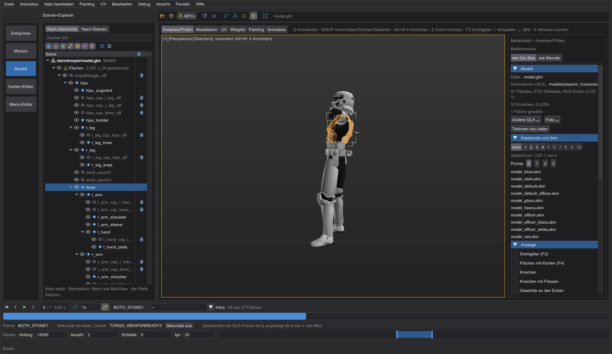
Die Zeile folgt dem Bedienmodus. wie 3ds Max (Szenen-Explorer): der Pfeil zum Aufklappen, das Auge und das Symbol stehen direkt vor dem Namen, jede Ebene ist um ein Symbol eingerückt; die Spalte Eingefroren (Schneeflocke) friert ein. Die Spaltenköpfe lassen sich in der Breite ziehen, und ein Klick auf Name sortiert aufsteigend, absteigend und zurück zur Reihenfolge der Hierarchie. Die Symbolreihe unter der Suche zeigt Arten von Zeilen oder lässt sie weg (Flächen, Kappen, Tags, Knochen, Sequenzen, angebaute Modelle, Rig-Griffe; Strg+Klick: nur diese Art). wie Blender (Outliner, Umschalter Hierarchie / Sammlungen): der Baum links, das Auge und der Pfeil „wählbar“ rechts in festen Spalten, die Arten im Ausklapper Filter neben der Suche (mit Knochen als flache Liste und Alphabetisch sortieren). Der Baum rollt nie seitwärts: tiefe Knochen rücken enger zusammen, und ein Name, der nicht passt, endet mit „...“ und steht ganz im Tooltip, zusammen mit der Info der Zeile (Ecken, Dreiecke, Shader, Eltern, Status im Spiel - auch als Info im Rechtsklick-Menü). Umschalt+Klick wählt alle Flächen von der zuletzt angeklickten bis zu dieser. Vor einer Fläche: ein Punkt = an, ein Ring = aus, ein durchgestrichener Ring = aus samt Kindern, ein Anker hinter dem Namen = Wurzelfläche.
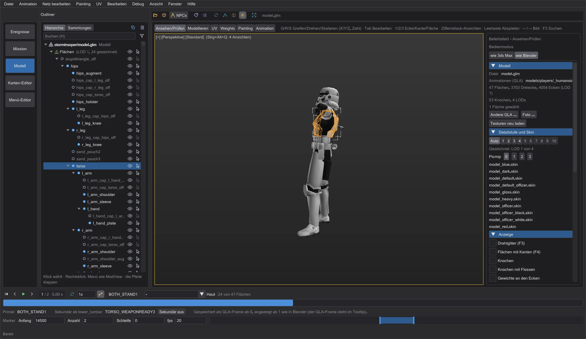
Nach Ebenen (wie Blender: Sammlungen) ordnet dieselben Zeilen in Ebenen: Körper, Kappen (_off), Tags, Knochen, Anbauten und die weiteren Detailstufen (LOD 2, LOD 3 ...). Das Auge einer Ebene blendet alle ihre Zeilen nur in der Ansicht aus - das Spiel bleibt, wie es ist; was das Spiel zeichnet, schaltet weiter an/aus der Flächen. Die Schneeflocke (wie Blender: der Pfeil) friert ein: Eingefrorenes bleibt sichtbar; ein Klick im Baum wählt es nur wie 3ds Max (wie Blender nicht), ein Klick in der Ansicht geht hindurch auf die Fläche dahinter (wie 3ds Max), der Auswahlrahmen lässt es aus, und liegt dahinter nichts, sagt die Statuszeile, warum. Die Kappen sind von Anfang an eingefroren, damit ein Klick auf die Figur nie eine Kappe trifft. Das Auge einer LOD-Ebene zeigt diese Detailstufe. Jede einzelne Zeile hat dieselben zwei Schalter; Strg+Klick auf ein Auge zeigt nur diese Zeile, Umschalt+Klick auf die Schneeflocke nimmt die Kinder mit.
Eingefrorene Zeilen im Szenen-Explorer (3ds-Max-Modus): ein Klick auf eine eingefrorene Zeile wählt sie, wie im Scene Explorer von 3ds Max - etwa um sie mit Auswahl auftauen im Rechtsklick-Menü der Zeile oder in „Alle Aktionen suchen“ aufzutauen. In der Ansicht geht ein Klick weiter durch eine eingefrorene Fläche hindurch und wählt die dahinter. Im Blender-Modus bleibt eine Zeile, deren Pfeil „wählbar“ aus ist, wie bisher nicht wählbar.
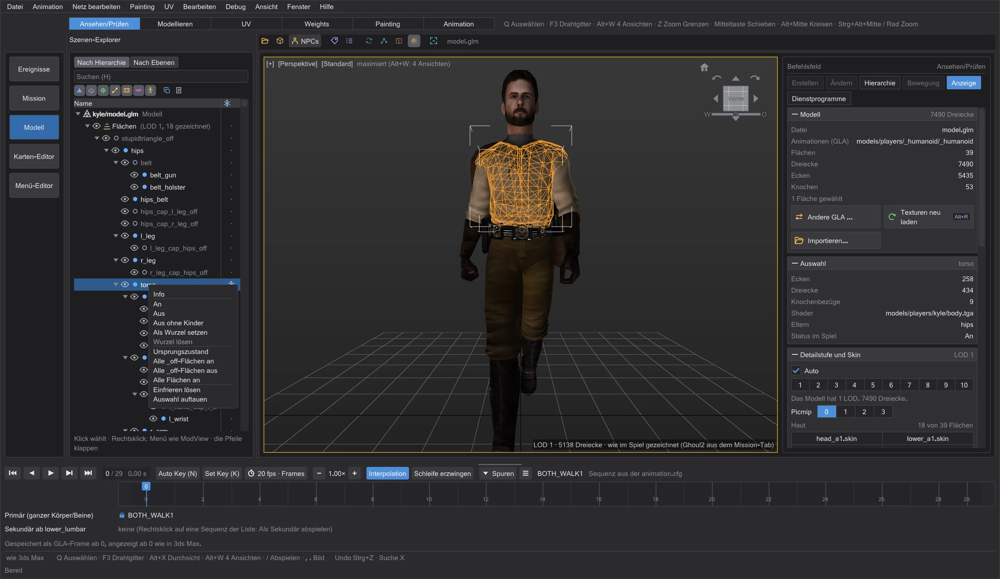
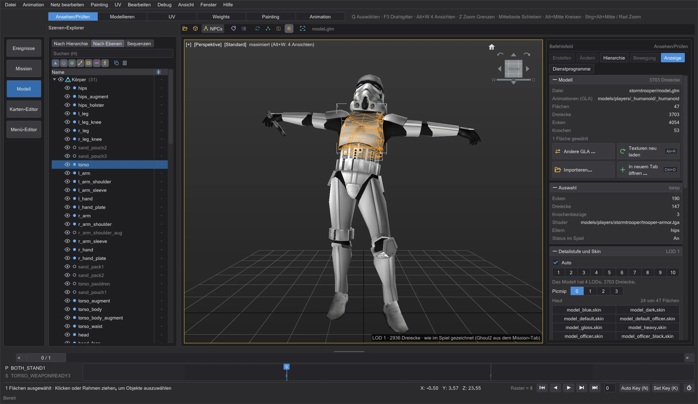
Die sekundäre Sequenz spielt auf dem Oberkörper ab lower_lumbar, wie SET_ANIM_UPPER im Spiel (ein anderer Start-Knochen: Rechtsklick auf einen Knochen). Interpolation mischt zwischen zwei Bildern wie das Spiel.
Jede Zeile des Szenen-Explorers zeigt, was sie ist: Modell, Tag, Knochen, Wurzelknochen, Anbau, Rig-Griff, Sequenz; eine Fläche zeigt ihren Status im Spiel (Punkt = an, Ring = aus, durchgestrichener Ring = aus samt Kindern). Ein Klick auf das Auge blendet eine Zeile samt ihren Kindern aus, Strg- oder Alt+Klick zeigt nur diese; Alle einblenden steht im Rechtsklick-Menü und in der Aktionssuche. Ausgeblendete Zeilen sind grau; Auswählen, Malen und das Foto gehen an ihnen vorbei. Wie Blender: H, Alt+H, Umschalt+H.
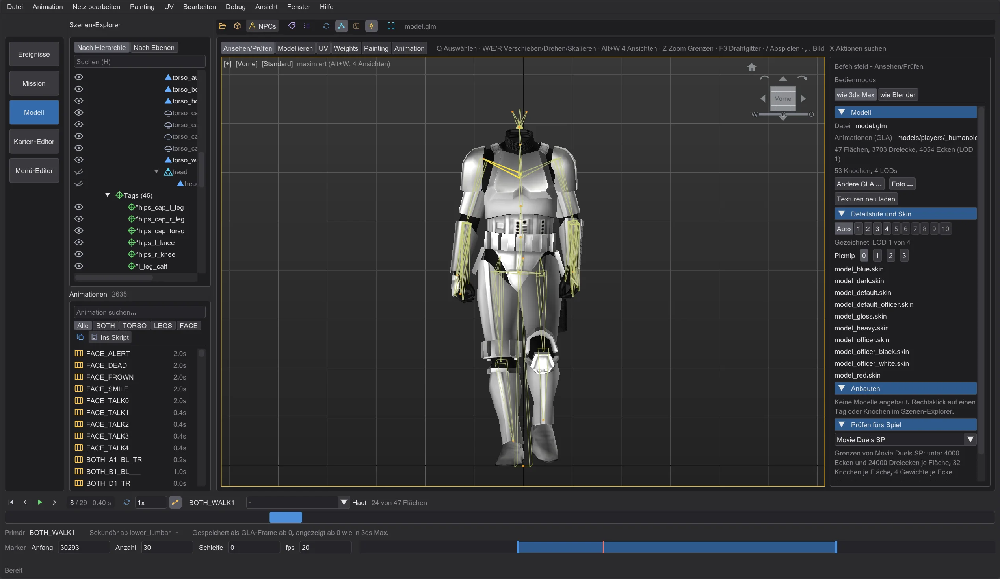
Befehlsfeld#
Das Feld rechts folgt dem Bedienmodus. wie 3ds Max: das Befehlsfeld mit den Reitern Erstellen, Ändern, Hierarchie, Bewegung, Anzeige und Dienstprogramme und Gruppen mit flachen Überschriftsbalken. wie Blender: Eigenschaften mit einer senkrechten Spalte aus Symbolen (Werkzeug, Objekt, Modifikatoren, Daten, Knochen, Beschränkungen, Material - der Name steht im Tooltip) und abgerundeten Kästen. Jeder Bereich des Tabs wählt seinen Reiter - Ansehen/Prüfen öffnet Anzeige bzw. Objekt, Animation öffnet Bewegung bzw. Knochen - und zeigt dort alle seine Gruppen untereinander. Die anderen Reiter zeigen ihren Teil: in Ansehen/Prüfen stehen unter Hierarchie die angebauten Modelle und unter Dienstprogramme die Prüfung für das Spiel. Ein Reiter, der im laufenden Bereich nichts hat, ist ausgegraut.
In einem kleinen Fenster (niedriger als etwa 50 Textzeilen, zum Beispiel bei der kleinsten Größe des Programms) brauchen die Reiter des Befehlsfeld als Text zwei oder drei Reihen. Dort stehen sie wie 3ds Max als Symbole in einer Reihe, wie die Spalte der Eigenschaften wie Blender; der Name eines Reiters steht in seinem Tooltip. Das Feld behält so den Platz für seine Gruppen.
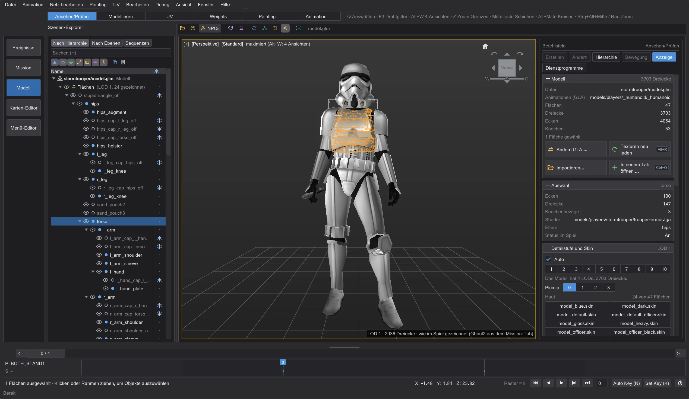
Jede Gruppe hat dieselbe Form. Ein Klick auf die Überschrift klappt die Gruppe zu; rechts in der Überschrift steht eine Kurzinfo (Dreiecke, die gezeichnete LOD, die Zahl der angebauten Modelle, die Befunde der Prüfung - grün alles gut oder rot mit ihrer Zahl). Knöpfe stehen im Raster aus zwei gleich breiten Spalten, jeder mit Symbol und - wo es eine gibt - der Taste des Bedienmodus als kleinem Tastenfeld; der Hauptknopf einer Gruppe ist in der Betonungsfarbe hervorgehoben. Werte stehen als Tabelle (Name links, Wert rechts), eine Wahl wie LOD 1-10 oder Picmip 0-3 als eine zusammenhängende Reihe, Hinweise in einem Kasten mit Info-Symbol. In einem schmalen Feld wird nichts abgeschnitten: Texte brechen um, und das Raster nimmt eine Spalte.
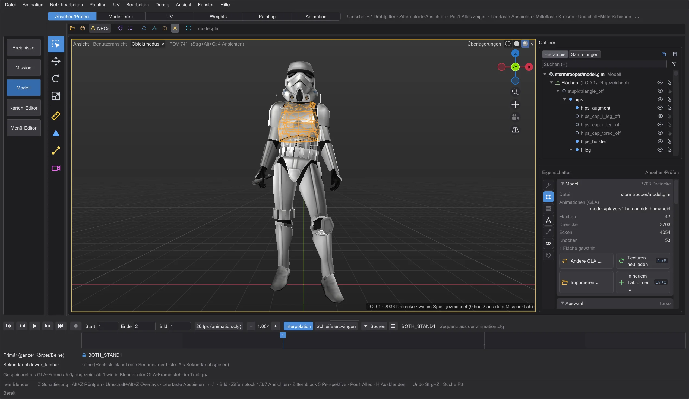
Breite, Bereiche und Bedienmodus. Ziehe die Kante zwischen den Ansichten und dem Feld, um das Feld breiter oder schmaler zu machen (ein Doppelklick stellt die Vorgabe wieder her); das Programm merkt sich die Breite. Die Bereiche des Tabs - Ansehen/Prüfen, Modellieren, UV, Weights, Painting, Animation - stehen als eine Reihe gleich breiter Felder über dem ganzen Tab, über Explorer, Ansichten und Feld; daneben steht ein kurzer Hinweis mit den Tasten und der Mausnavigation des Bedienmodus für diesen Bereich. Den Bedienmodus selbst schaltest du mit einem Klick auf wie 3ds Max / wie Blender links in der Statuszeile des Tabs um, im Menü der Kopfzeile einer Ansicht (Bedienmodus), in den Einstellungen oder über die Suche nach allen Aktionen.
Kopfzeile der Ansicht, ViewCube und Gizmo#
Jede Ansicht hat oben links ihre Kopfzeile wie die Viewport Label Menus von 3ds Max - jedes Feld leuchtet unter der Maus auf und öffnet mit Klick links oder rechts sein Menü. [+]: Ansicht maximieren (Alt+W), Zoom Grenzen (Z), was die Ansicht zeigt (Raster G, Boden, Ursprung, Hüllkasten, Auswahlklammer J, Statistik 7, Höhenlineal, einfarbiger Hintergrund), das Untermenü Knochen und Prüfen (Knochen, Flossen, Normalen, Tags, Risse finden, Ecken- und Dreieck-Nummern), ViewCube und der Blickwinkel. [Perspektive]: der Blickpunkt mit den Tasten von 3ds Max (P, U, T, B, F, L) und Startansicht (Figur von vorne). [Standard]: die Schattierung dieser Ansicht - Drahtgitter (F3), Kanten über Flächen (F4), zweiseitig, weiße Texturen, Gewichte, Silhouette. In den vier Ansichten behält jede ihre eigene Schattierung, ihr Raster und ihre Statistik. Dieselben Menüs hat das Rechtsklick-Menü der Ansicht, und Alle Aktionen suchen (X) (X) findet jeden Schalter; sein Tooltip nennt den Ort. Schalter, die eine gewählte Fläche brauchen (Nummern, Risse finden), sagen das in der Ansicht, bis eine gewählt ist.
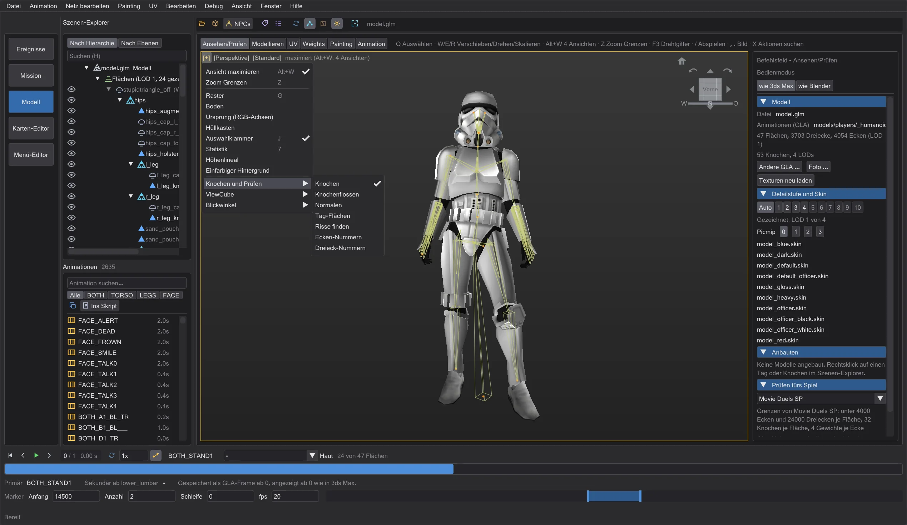
Der ViewCube oben rechts in der aktiven Ansicht zeigt, von wo man schaut, und verhält sich wie der von 3ds Max. Er hat 26 Ziele - 6 Flächen, 12 Kanten, 8 Ecken; das Ziel unter der Maus leuchtet auf, ein Klick dreht die Ansicht in einer kurzen Animation dorthin. Die Projektion bleibt: Eine Perspektive bleibt Perspektive; in einer Orthoansicht gibt eine Fläche ihre Ansicht (Vorne, Oben ...), eine Kante oder Ecke die freie Ansicht Orthographisch. Ziehen am Würfel kreist. Der Kompassring darunter trägt N, O, S und W: Ziehen am Ring dreht nur um die Hochachse, ein Klick auf einen Buchstaben schaut von dort. Schaut man gerade auf eine Fläche, führen vier Pfeile zu den Nachbarflächen, und zwei gebogene Pfeile rollen die Ansicht um 90 Grad. Das Haus oben links ist Home: Die Kamera fliegt zur Figur von vorne, mittig. Ein Rechtsklick bietet Home, Aktuelle Ansicht als Home setzen und Orthographisch. Eine als Home gesetzte Ansicht bleibt bei der Figur: JK Studio merkt sie sich je Figur, auch über den Neustart. Home zurücksetzen macht die Startansicht wieder zu Home. Der Würfel ist halb durchsichtig, bis die Maus darüber ist. Eine Figur schaut in ihrer .glm nach -Y (das Spiel dreht sie nach +X), darum zeigt Vorne ihr Gesicht - auch nach dem Laden einer Figur, nach Alt+W und beim Zurücksetzen der Ansicht; wie in 3ds Max liegt Norden hinter der Fläche Vorne. [+] > ViewCube schaltet den Würfel oder den Kompass aus, zeigt den Würfel in allen vier Ansichten und stellt den Winkel für Norden ein.
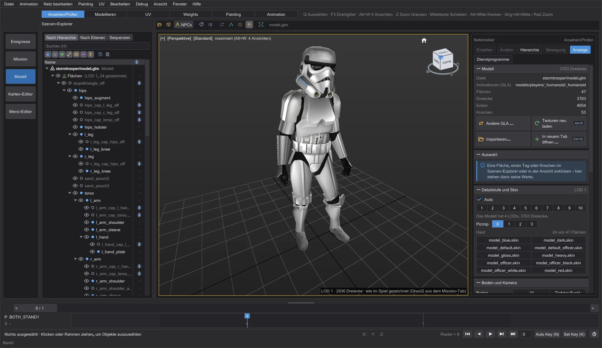
Im Modus wie Blender ist die Kopfzeile aufgebaut wie Blenders 3D-Ansicht: links das Menü Ansicht (Auswahl zeigen, Alles zeigen, Perspektive/Orthographisch, Blickpunkt mit den Ziffernblock-Tasten, Navigation mit Kreisen, Rollen und der Gegenseite, vier Ansichten), rechts Überlagerungen und die drei Knöpfe von Viewport Shading - Drahtgitter, Solid, Materialvorschau - mit dem Ausklappmenü für Rückseiten und Silhouette. Darunter steht das Navigations-Gizmo: ein Klick auf eine Achse schaut entlang ihr, ein zweiter Klick von der Gegenseite, Ziehen kreist (eine Achsenansicht wird zur Perspektive, wie Blenders Auto Perspective); darunter Zoomen, Verschieben, die Kameraansicht (blass - der Model-Tab hat keine Szenenkamera) und Perspektive/Orthographisch. Der Ziffernblock wirkt wie in Blender: 4/6/8/2 kreisen um 15 Grad, Umschalt+4/6 rollen, 9 die Gegenseite, Strg+1/3/7 Hinten, Links und Unten, Umschalt+Z Drahtgitter, Strg+` das Gizmo.
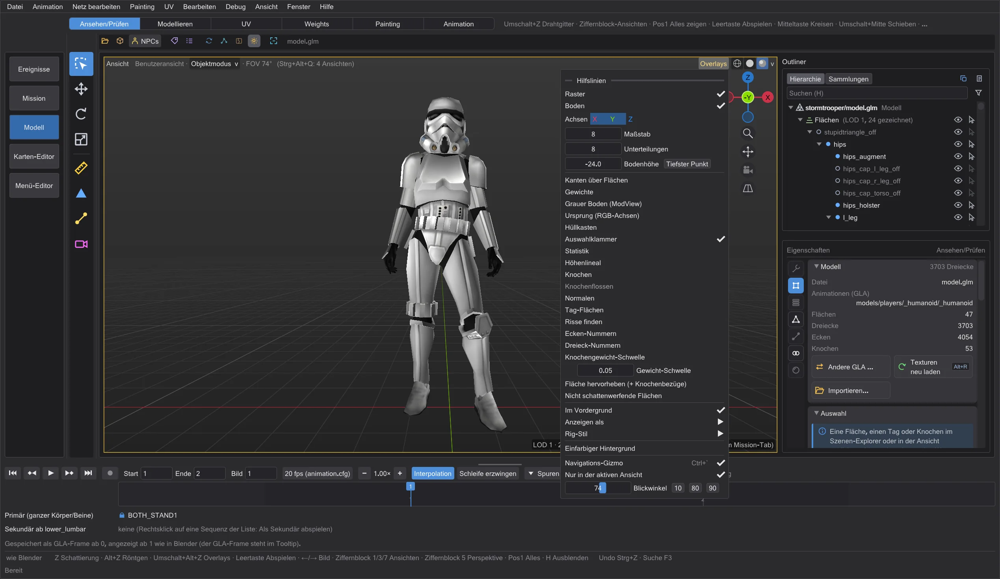
Der ViewCube ist aus WhiteoutDex (max_viewcube.h, BSD-3-Clause-Lizenz, Copyright (c) 2026 WhiteoutDex Contributors) und WhiteoutFlakes (BSD-3-Clause-Lizenz mit Hinweis zu KI-abgeleiteten Werken, Copyright (c) 2026 Fernando Sahmkow) abgeleitet; das Navigations-Gizmo zeichnet JK Studio selbst - keine Grafiken von Autodesk oder Blender.
Boden-Raster#
Jede Ansicht zeigt ab Werk ein Raster wie das Home Grid von 3ds Max: feine Linien im Rasterabstand, dunklere Hauptlinien und die Weltachsen schwarz. In der Perspektive liegt es auf dem Boden und endet nach 7 Linien (Max: Perspective View Grid Extent); in den Ansichten Oben, Vorne, Links ... liegt es in der Bildebene, füllt die ganze Ansicht und wächst mit dem Zoom - weiter weg werden die Hauptlinien zu den neuen Linien, näher heran wird es nie feiner als der Abstand, wie in Max. Die Figur verdeckt das Raster. [+] > Raster (G) schaltet es für diese Ansicht. [+] > Rastereinstellungen stellt Rasterabstand (8 JKA-Einheiten wie das Raster des Karten-Editors), Hauptlinien alle N Rasterlinien (8: eine Hauptlinie alle 64 Einheiten - die Höhe eines Spielers), Rastergröße in der Perspektive und die Bodenhöhe ein: ab Werk -24, die Füße einer JKA-Figur. 3ds Max und Blender legen ihr Raster auf Z = 0, eine JKA-Figur hat ihren Ursprung aber in der Hüfte. Tiefster Punkt legt den Boden unter den tiefsten Punkt der Figur in ihrer Pose (Requisiten mit Ursprung am Boden: 0). Abstand und Hauptlinien stehen auch in den Einstellungen (Model-Tab: Raster). Der graue Boden von ModView (Grauer Boden (ModView)) bleibt ein eigener Schalter und lässt sich zusammen mit dem Raster zeigen.
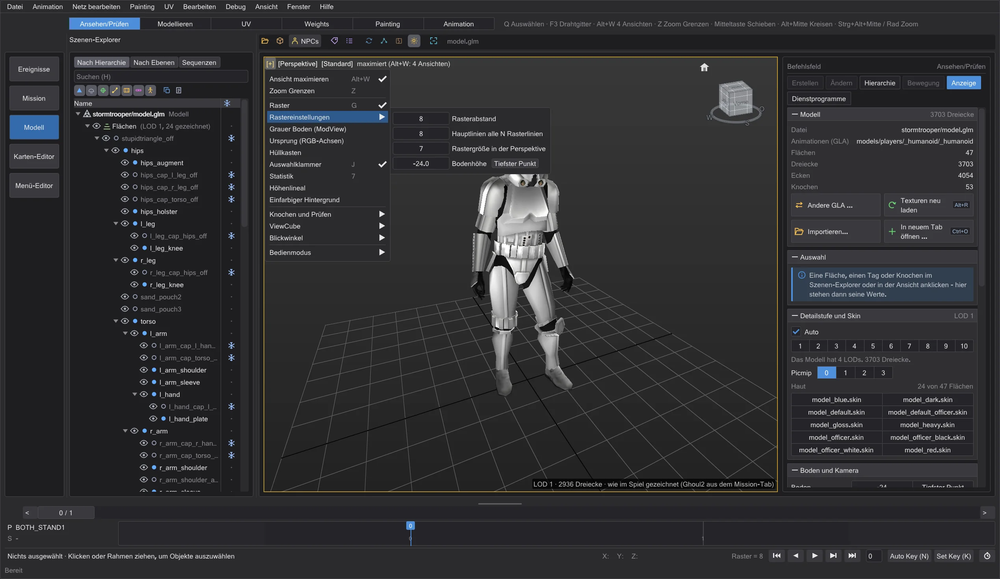
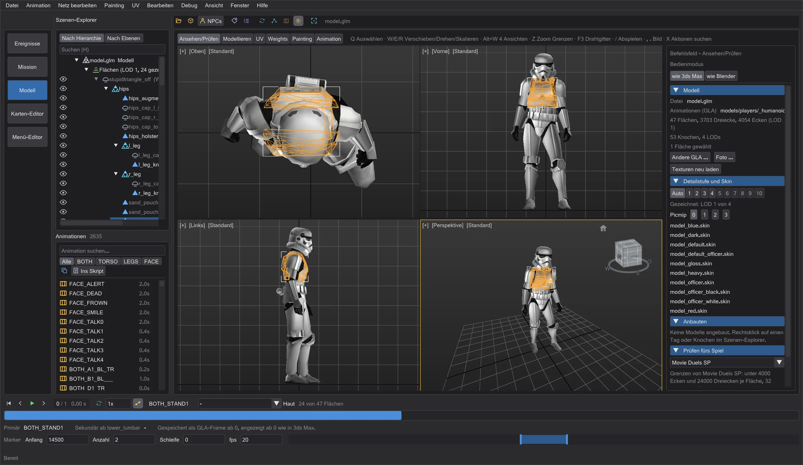
Im Modus wie Blender sieht das Raster aus und verhält sich wie Blenders Überlagerungen: der Boden blendet zum Horizont aus und wirkt unendlich, die X-Achse ist rot, die Y-Achse grün (Z blau, wenn du sie einschaltest); in den Seitenansichten wechseln die Unterteilungen mit dem Zoom. Überlagerungen > Hilfslinien hat Raster (die Seitenansichten), Boden (Perspektive), Achsen X Y Z, Maßstab und Unterteilungen - jede Ansicht behält ihre eigenen Schalter; Maßstab und Unterteilungen sind der Abstand und die Hauptlinien von oben.
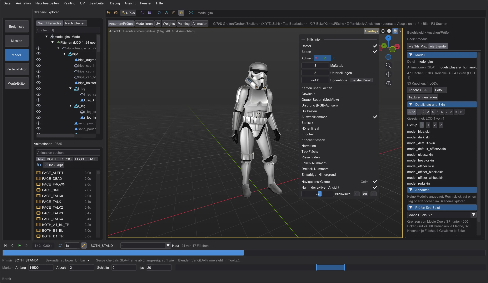
Navigation in den Ansichten#
Maus und Tasten bewegen eine Ansicht genau wie in dem Programm, dessen Modus eingestellt ist (Einstellungen > Model-Tab > Bedienung): wie 3ds Max oder wie Blender. Die Zeile über den Ansichten nennt das Wichtigste, jeder Befehl steht auch im Menü der Kopfzeile ([Name der Ansicht] > Navigation, im Blender-Modus View > Navigation), im Rechtsklick-Menü und in der Suche (X / F3). Schieben bewegt die Szene genau mit der Maus, Zoomen und Kreisen halten den Punkt in der Bildmitte fest.
Wie 3ds Max
| Maus / Taste | Was es tut |
|---|---|
| Mitteltaste | Schieben: die Ansicht folgt der Maus. Mit Umschalt nur entlang der Richtung, in die zuerst gezogen wird. |
| Alt+Mitteltaste | Kreisen um den Punkt, der unter Navigation > Kreisen um gewählt ist (ab Werk die Auswahl, ohne Auswahl die Ansichtsmitte). Eine Ansicht Oben, Vorne, Links ... wird dabei zur freien Ansicht Orthographisch. Mit Umschalt nur um die zuerst benutzte Achse. |
| Strg+Alt+Mitteltaste | Zoom: nach oben näher heran, nach unten weiter weg. |
| Mausrad, [ ], Strg+= Strg+- | Zoom in Schritten um den Punkt unter der Maus (Zoom um den Mauspunkt (orthographisch) / Zoom um den Mauspunkt (Perspektive); aus: um die Ansichtsmitte). |
| Z, Strg+Alt+Z | Zoom Grenzen: Z passt die Auswahl (ohne Auswahl die ganze Figur) in alle Ansichten ein, Strg+Alt+Z die ganze Figur in die aktive Ansicht, Strg+Umschalt+Z die ganze Figur in alle Ansichten (Zoom Grenzen: Alle (Strg+Umschalt+Z)) - wie in 3ds Max; Wiederholen ist dort Strg+Y. Im Modus wie Blender bleibt Strg+Umschalt+Z Wiederholen. |
| Strg+Alt+Umschalt+Z, Alt+Umschalt+Z | Doppelt so nah / doppelt so weit. |
| Alt+Z, Strg+P, Strg+R, Strg+W | Navigationsmodi wie die Knöpfe unten rechts in 3ds Max - Zoom, Schieben, Orbit, Bereichszoom: mit der linken Taste ziehen, der Name des Modus steht unten in der Ansicht; Rechtsklick oder Esc beendet ihn. Orbit zeigt den gelben Kreis: innen dreht die Ansicht frei, an einem der vier Griffe nur um eine Achse, außerhalb rollt sie. Bereichszoom: das aufgezogene Rechteck füllt danach die Ansicht. |
| I | Zum Mauszeiger schieben: der Punkt unter der Maus kommt in die Bildmitte. |
| Umschalt+Z, Umschalt+Y | Die letzte Ansichtsänderung der aktiven Ansicht (Schieben, Zoom, Drehen, ViewCube) zurücknehmen / wiederholen - ein eigener Verlauf je Ansicht, unabhängig von Strg+Z. |
| T B F L P U, V | Ansichten Oben, Unten, Vorne, Links, Perspektive, Orthographisch; V öffnet das Menü aller Ansichten am Mauszeiger. |
| Alt+W, Alt+Pos1, Strg+Alt+V | Eine Ansicht oder vier; Home-Ansicht (Home des ViewCube); ViewCube zeigen oder ausblenden. |
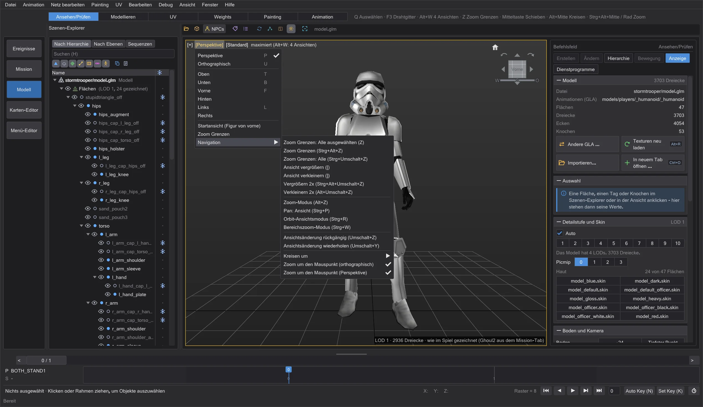
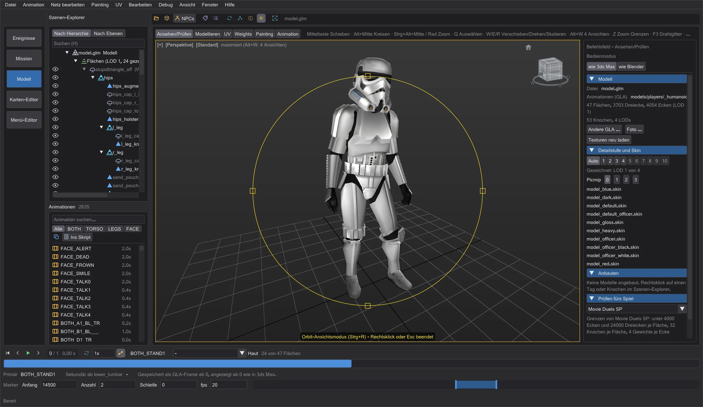
Wie Blender
| Maus / Taste | Was es tut |
|---|---|
| Mitteltaste | Kreisen (Turntable): links und rechts um die Hochachse, hoch und runter über die Figur - auch über den Pol. Eine Ansicht Vorne, Rechts, Oben ... wird dabei zur Perspektive (Auto Perspective). Alt beim Ziehen rastet auf die Ansichten entlang der Achsen und Diagonalen. |
| Umschalt+Mitteltaste | Schieben: die Ansicht folgt der Maus. |
| Strg+Mitteltaste | Zoom durch Ziehen nach oben und unten (Blenders Dolly-Zoom). |
| Mausrad, Numpad + Numpad -, Strg+= Strg+- | Zoom in Schritten: ein Schritt teilt oder vervielfacht den Abstand um 1,2, um die Ansichtsmitte (Zur Mausposition zoomen an: zur Maus). |
| Alt+Mitteltaste | Ziehen dreht die Ansicht eine Vierteldrehung weiter auf die benachbarte Achsenansicht (rechts, links, hoch, runter); ein Klick legt den Punkt der Figur unter der Maus in die Bildmitte. |
| Numpad 1 Numpad 3 Numpad 7, Numpad 5, Numpad 9 | Vorne, Rechts, Oben (mit Strg die Gegenseite), orthographisch und weich gedreht; Numpad 5 schaltet zwischen Perspektive und orthographisch in derselben Richtung um; Numpad 9 die Gegenseite. |
| Numpad 4 Numpad 6 Numpad 8 Numpad 2 | In 15-Grad-Schritten kreisen (4 und 6: die Kamera geht nach links und rechts, 8 und 2: hoch und runter); mit Umschalt rollen 4 und 6 die Ansicht, mit Strg schieben die vier Tasten sie. |
| Numpad ., Pos1, Umschalt+C | Auswahl zeigen (nichts gewählt: nichts geschieht), Alles zeigen und Alles zeigen samt Ursprung. Die Richtung bleibt. |
| `, Umschalt+B, Strg+Alt+Q | Das Kuchenmenü View am Mauszeiger (Left, Right, Bottom, Top, Front, Back, View Selected); Bereich zoomen - ein Rechteck aufziehen, das danach die Ansicht füllt; die Vierer-Ansicht mit Oben, der Perspektive, Vorne und Rechts. |
| Gizmo | Das Gizmo oben rechts: eine Achse anklicken für ihre Ansicht (schaut man genau entlang einer Achse, gibt die Mitte die Gegenseite), daran ziehen zum Kreisen; die Knöpfe darunter zoomen und schieben durch Ziehen und schalten zwischen Perspektive und orthographisch um. |
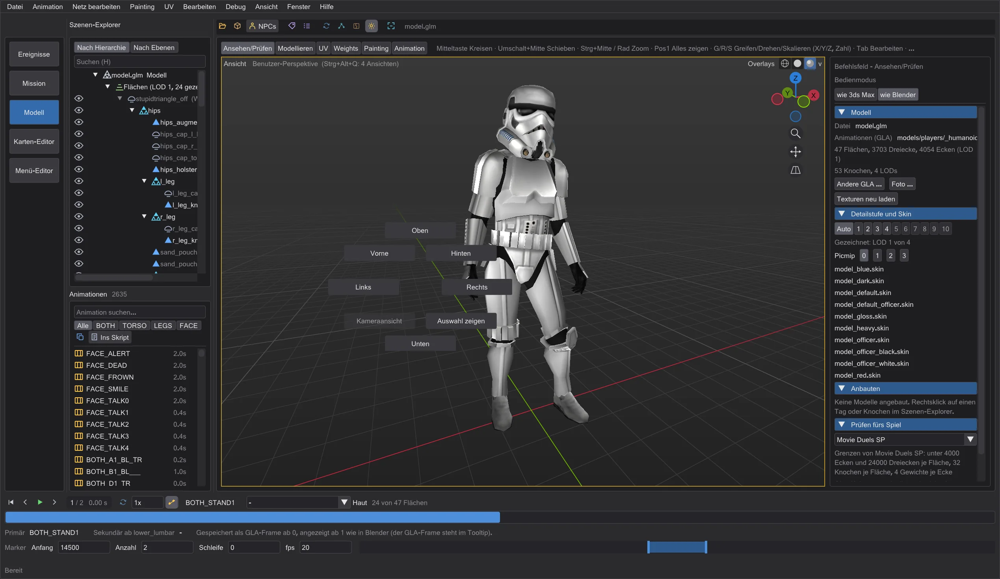
Unter Navigation stehen auch die Einstellungen: wie 3ds Max Kreisen um (Ansichtsmitte (Orbit), Auswahl (Orbit Selected), Unterobjekt-Auswahl (Orbit SubObject), Punkt unter der Maus (Orbit Point of Interest)) und die beiden Schalter Zoom um den Mauspunkt (orthographisch) / Zoom um den Mauspunkt (Perspektive); wie Blender Um die Auswahl kreisen und Zur Mausposition zoomen (beide ab Werk aus wie in Blender). Nicht nachgebaut: die SteeringWheels und der Durchgangsmodus von 3ds Max, Gehen/Fliegen und das Trackball-Kreisen von Blender, Kameraansichten.